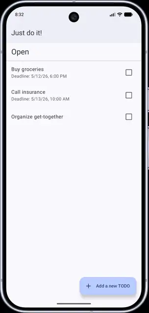
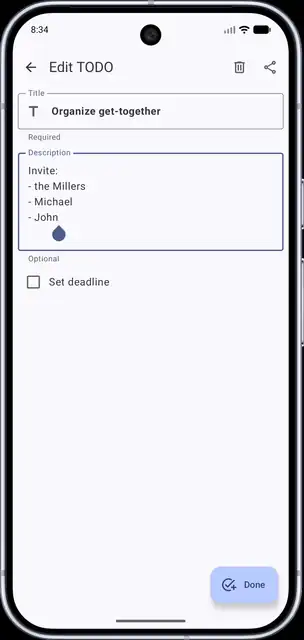

Do It
إنتاجية ومهام
Do-It is a clean, distraction-free to-do app that helps you stay on top of your tasks. Features - View open and completed todos in separate sections - Add and edit todos with a title, optional description, and optional deadline - Mark todos complete or incomplete with a single tap - Multi-select tod
✓ ترخيص مفتوح (Apache-2.0) · آخر تحديث: 2026-05-27
1.7الإصدار
3.2 MBالحجم
Apache-2.0الرخصة
Open in Kanzتحميل APK (3.2 MB)
Download APK
SHA-256: f3db673c53628636ce74ab71f7575891b533c5f4e3fd5f5e7492133bdb719867


امسح الكود لفتح صفحة التطبيق
Scan to open this app page
لو كنز مش متثبت عندك: نزّل متجر كنز.
Not installed? Get the Kanz store.